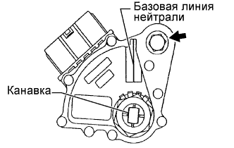

ДАТЧИК ПОЛОЖЕНИЯ ПАРКИНГА / НЕЙТРАЛИ > РЕГУЛИРОВКА |
| 1. ОТРЕГУЛИРУЙТЕ ДАТЧИК ПОЛОЖЕНИЯ ПАРКИНГА/НЕЙТРАЛИ В СБОРЕ |
|  |
Ослабьте болт датчика положения паркинга/нейтрали и установите рычаг переключения передач в положение N.
Совместите базовую линию нейтрали с канавкой датчика.
Удерживая датчик на месте, затяните болт.
По окончании регулировки выполните проверку (Нажмите здесь).